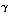

Ako je n produkt dva bliska broja, onda postoji jednostavna
metoda, tzv. Fermatova faktorizacija, za faktorizaciju od
n. Metoda se zasniva na činjenici da je n tada razlika
kvadrata dva broja, od kojih je jedan jako mali. Naime, ako je
n = ab, onda je n = t2 -
s2, gdje je t = (a+b)/2,
s = (a-b)/2. Ako su a i b bliski,
onda je s mali, a t je samo malo veći od
√n.
Primjer 4.4: Neka je n = 200819. Imamo:
⌊√200819⌋ + 1 = 449.
Sada je 4492 - 200819 = 782,
što nije kvadrat. Pokušajmo sa t = 450. Imamo:
4502 - 200819 = 1681 = 412, pa je
200819 = 4502 - 412 =
(450 + 41)(450 - 41) = 491 · 409.
Poopćenje ove ideje dovodi do vrlo efikasne metode
faktorizacije.
Definicija:Faktorska baza je skup
B
= {p1, p2, ... ,
pk} različitih prostih brojeva, s time
da može biti p1 = -1. Reći ćemo da je kvadrat
cijelog broja b
B-broj
(za dani n) ako se najmanji ostatak
po apsolutnoj vrijednosti od b2 modulo n
može napisati kao produkt brojeva iz
B.
Algoritam faktorske baze:
Odaberimo prirodan broj
y "srednje veličine" (npr. ako je
n ≈
1050, uzmimo y
≈ 106).
Neka je B =
{p : p prost, p
≤ y}
∪ {-1}. Izaberimo na
slučajan način mnogo bi-ova, te
pokušajmo prikazati bi2
mod n (apsolutno najmanji ostatak) kao produkt elemenata iz
B.
Kad dobijemo dovoljno mnogo
B-brojeva
među tim ostatcima (dovoljno je
π(y) + 2),
pogledajmo odgovarajuće vektore parnosti eksponenata.
To su vektori u
(Z2)π(y)+1.
Budući da tih vektora ima više od
dimenzije pripadnog vektorskog prostora, to su oni linearno
zavisni. Pronađemo njihovu netrivijalnu linearnu kombinaciju
koja daje nul-vektor. Drugim riječima, nađemo podskup
bi-ova takav da je suma pripadnih vektora
jednaka nul-vektoru.
Neka je sada b =
∏ibi mod n,
c =
∏jpj  mod n,
gdje je bi2 mod n =
∏jpj,
γj =
(∑i
αij)/2.
Tada je b2
≡
c2 mod n.
Ako je b ≢
±c (mod n),
onda izračunamo (b + c, n) i to je netrivijalni
faktor od n.
Ako je
b ≡
±c (mod n), onda odaberemo neki drugi
linearno nezavisni podskup ili nađemo još
B-brojeva, pa ponovimo
postupak.
Primjer 4.5: Neka je n = 1829 i uzmimo za
bi brojeve
oblika ⌊√1829k⌋ i
⌊√1829k⌋ + 1,
k = 1, 2, ... takve da je
bi2 mod n produkt prostih
brojeva manjih od 14 (šansa da je
bi2 mod n
produkt malih prostih brojeva je veća ako je taj broj i sam mali,
a to će biti ako je bi
≈
√kn).
Za takve bi napišemo
bi2 mod n =
∏jpj
i tabeliramo
ij-ove.
Nakon što smo uzeli k =
1, 2, 3, 4, dobili smo sljedeću tablicu kojoj se elementi
ij-ovi:
bi
-1
2
3
5
7
11
13
42
1
1
1
43
2
1
61
2
1
74
1
1
85
1
1
1
86
4
1
Vidimo da je suma drugog i šestog retka (0,6,0,2,0,0,0)
nul-vektor u
(Z2)7. To nam daje kongruenciju
(b2b6)2
≡
(2(6/2) · 5(2/2))2
(mod n),
tj. (43 . 86)2
≡
402 (mod 1829). No, 43 · 86
≡
40 (mod 1829), pa ne dobivamo netrivijalnu
faktorizaciju. Uočimo međutim da je suma prvog, drugog,
trećeg i petog retka (2,2,2,2,2,0,2), što daje
kongruenciju


 i tabeliramo
ij-ove.
Nakon što smo uzeli k =
1, 2, 3, 4, dobili smo sljedeću tablicu kojoj se elementi
ij-ovi:
i tabeliramo
ij-ove.
Nakon što smo uzeli k =
1, 2, 3, 4, dobili smo sljedeću tablicu kojoj se elementi
ij-ovi: